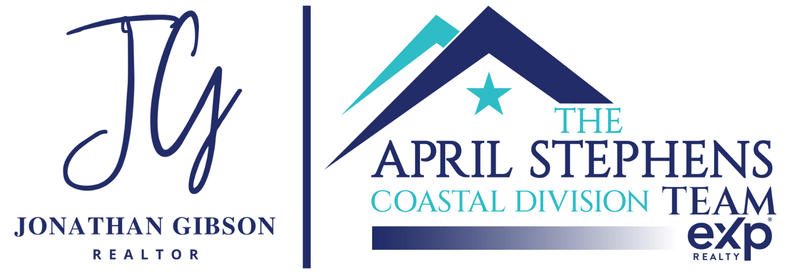
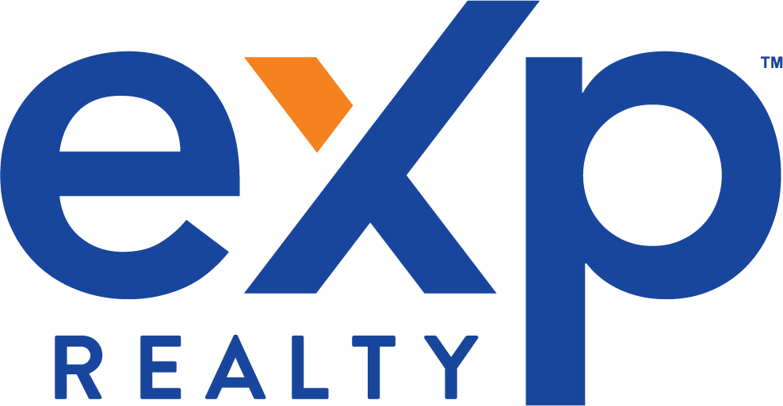

Wilmington NC Real Estate
If you're looking for the best listing agent in Wilmington, NC, the answer comes down to strategy, marketing, and execution. Jonathan Gibson Realtor helps sellers position their home correctly, attract serious buyers, and negotiate strong outcomes in today’s market.
The best listing agents don’t just put a home on the market—they guide pricing, exposure, negotiation, and the entire transaction process. In Wilmington and surrounding coastal markets, these details directly impact your final outcome.
Jonathan Gibson Realtor works with sellers across New Hanover, Pender, and Brunswick Counties, helping homeowners navigate each step with clarity and confidence.
In today’s market, pricing too high or too low can cost sellers time and money. Marketing alone isn’t enough—the entire approach needs to be aligned from the start.
Recent transactions have included negotiating favorable purchase terms and securing repair credits for clients in competitive situations—demonstrating how strategy and execution directly impact outcomes.
Jonathan Gibson Realtor approaches each listing with a clear strategy—balancing exposure, timing, and negotiation to help sellers achieve strong results.
Many sellers are also buying their next home. Working with an agent who understands both sides of the transaction can make a significant difference.
Jonathan Gibson Realtor works with both buyers and sellers across Wilmington and coastal North Carolina—providing insight into how buyers think, how homes are evaluated, and how to position a property effectively.
Contact
Whether you are selling, buying, or planning your next step, Jonathan Gibson Realtor offers a straightforward approach backed by local knowledge, strategy, and disciplined execution.
